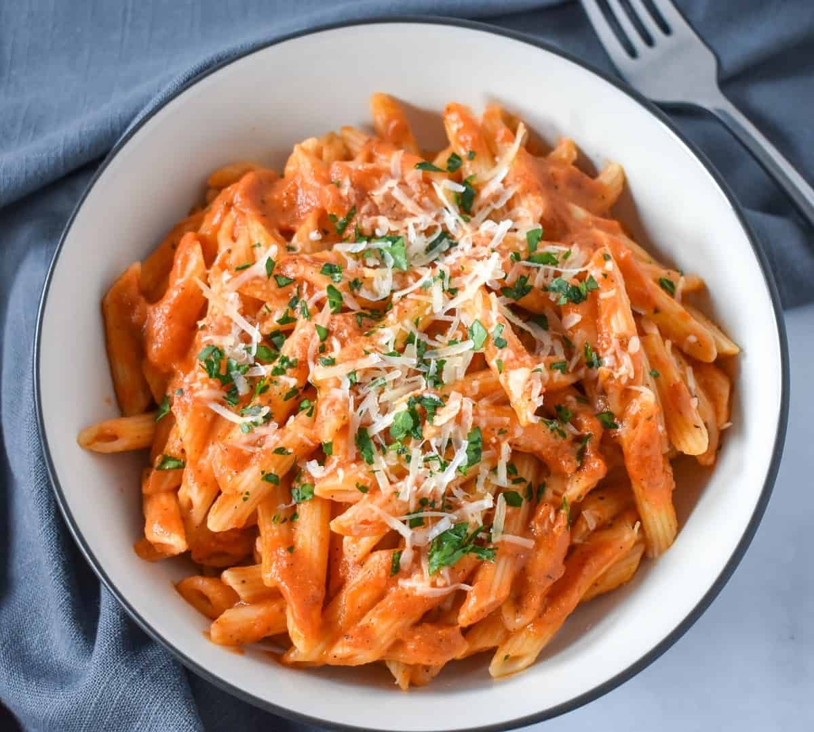

Vodka Pasta

Description:
Penne alla vodka is a pasta dish made with vodka and penne pasta, usually made with heavy cream, crushed tomatoes, onions, and sometimes sausage, pancetta or peas.
The recipe became very popular in Italy and in the United States around the 1980s, when it was offered to discotheque customers.
Ingrediets:
- 16 ounces penne pasta
- 2 tablespoons butter
- 2 teaspoons garlic
- 1/2 teaspoon crushed red pepper flakes
- 28 ounce can Italian style or San Marzano whole tomatoes
- 1/4 cup vodka
- 1 cup heavy cream
- 3/4 cup grated parmesan cheese
- salt and pepper to taste
- 2 tablespoons chopped parsley